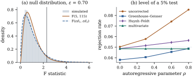

33.3 Repeated measures
A repeated-measures study observes the same subject on several occasions: a clustered design whose cluster is the subject and whose “treatments” are the occasions, laid out like the split-plot design of Section 33.1, and for many years analysed that way.
The analogy has one weak joint. What makes the
split-plot covariance compound symmetric is the
randomization of subplot treatments within the
whole plot, and occasions cannot be randomized:
measurements close together in time are more alike than
distant ones, so compound symmetry here is usually
false. What is remarkable is that the univariate
33.3.1. The univariate analysis
Let
Laid out with subjects as rows and occasions as
columns the data have one observation per cell, and the
classical analysis is the additive two-way analysis of
variance of Section
16.1, with the subject-by-occasion interaction as
error. With
and the statistic is
Everything reduces to the within-subject contrasts.
Let
33.3.2. Sphericity
Let
Neither the condition nor
For a positive definite
(i)
(ii)
(iii)
(iv)
Moreover
Proof. Write
(i)
(ii)
(iii)
(iv)
For the bounds, let
Condition (ii) is the form to remember and to check:
all pairwise differences of the repeated
measurements have the same variance. Compound
symmetry says more than the
Let
(a)
(b) If
(c) Conversely, if the null distribution of
Proof.
(a) Since
(b) If
(c) Write
Idea. The repeated-measures
33.3.3. Two corrections and one alternative
When sphericity fails,
Under the assumptions of Theorem 33.3.2,
with
(a)
(b) The scaled chi-squared variable
Proof.
(a) The first two are Theorem 4.2.3 with
(b) Matching
By Lemma 33.3.1,
Part (b) becomes a procedure once
The Greenhouse–Geisser correction refers
The Huynh–Feldt correction removes the leading bias. For a single group of
which exceeds
The lower-bound correction takes
A third option avoids the issue. Since the
Under the assumptions of Theorem 33.3.2
with
Proof. Only the invariance is
proved. Replacing
Exactness under any
33.3.4. An example, four ways
Twenty-four patients have grip strength measured, in
kilograms, at six weekly visits, simulated from
| Analysis | statistic | degrees of freedom | |
|---|---|---|---|
| univariate, uncorrected | 4.770 | 5, 115 | 0.0005 |
| Greenhouse–Geisser, |
4.770 | 3.23, 74.2 | 0.0035 |
| Huynh–Feldt, |
4.770 | 3.81, 87.7 | 0.0019 |
| multivariate | 3.605 | 5, 19 | 0.0184 |
All four reject, but the evidence differs by a factor
of nearly forty between first and last. Distrust the
uncorrected test: its nominal degrees of freedom are too
large by the factor
import numpy as np
from scipy import stats
N, m = 24, 6
mu_true = np.array([48.0, 48.5, 48.9, 49.2, 49.4, 49.5]) # kg, a slow improvement
sigma, rho_true = 2.0, 0.6
lags = np.abs(np.subtract.outer(np.arange(m), np.arange(m)))
Sigma_true = sigma**2 * rho_true**lags # AR(1) within a patient
rng = np.random.default_rng(3303)
Yobs = np.round(mu_true + rng.multivariate_normal(np.zeros(m), Sigma_true, N), 2)
def contrast_basis(m):
"""Orthonormal basis U of the space of contrasts among m repeated measures."""
Q, _ = np.linalg.qr(np.column_stack([np.ones(m), np.eye(m)[:, 1:]]))
return Q[:, 1:] # columns orthonormal and orthogonal to 1
def epsilon(Psi):
"""Box's measure of departure from sphericity, 1/(m-1) <= eps <= 1."""
k = Psi.shape[0]
return np.trace(Psi)**2 / (k * np.sum(Psi * Psi))
U = contrast_basis(m)
Z = Yobs @ U # N x (m-1) contrasts, one row per patient
zbar = Z.mean(axis=0)
Sz = np.cov(Z, rowvar=False, ddof=1) # Wishart, (N-1) degrees of freedom
F_uncorrected = N * (zbar @ zbar) / np.trace(Sz)
eps_hat = epsilon(Sz)
eps_hf = min(1.0, (N * (m - 1) * eps_hat - 2)
/ ((m - 1) * ((N - 1) - (m - 1) * eps_hat)))
d1, d2 = m - 1, (N - 1) * (m - 1)
p_un = stats.f.sf(F_uncorrected, d1, d2)
p_gg = stats.f.sf(F_uncorrected, d1 * eps_hat, d2 * eps_hat)
p_hf = stats.f.sf(F_uncorrected, d1 * eps_hf, d2 * eps_hf)
T2 = N * zbar @ np.linalg.solve(Sz, zbar) # Hotelling's statistic
F_mv = (N - m + 1) / ((N - 1) * (m - 1)) * T2
p_mv = stats.f.sf(F_mv, m - 1, N - m + 1)
print(f"F = {F_uncorrected:.3f} on ({d1}, {d2}) df, p = {p_un:.4f}")
print(f"Greenhouse-Geisser eps = {eps_hat:.3f}, p = {p_gg:.4f}")
print(f"Huynh-Feldt eps = {eps_hf:.3f}, p = {p_hf:.4f}")
print(f"multivariate F({m - 1}, {N - m + 1}) = {F_mv:.3f}, p = {p_mv:.4f}")How much does the failure of sphericity cost? Figure 33.3.1 answers
with a simulation under

33.3.5. The modern treatment
The corrections above patch a fixed analysis; the
mixed-model approach fits the covariance instead. Write
the data as a linear mixed model (Definition 32.2.1)
with a fixed effect for each occasion and a
within-subject covariance
Remark (Between-subjects factors).
With a between-subjects factor the within-subject
analysis is the same, applied to the pooled within-group
covariance, and the univariate tests are exact iff the
pooled
33.3.6. Exercises
A. Check your understanding
Show that every
Solution. With
For
B. Practice
Show directly that compound symmetry
Solution.
Consider the mixed model
C. Going deeper
For